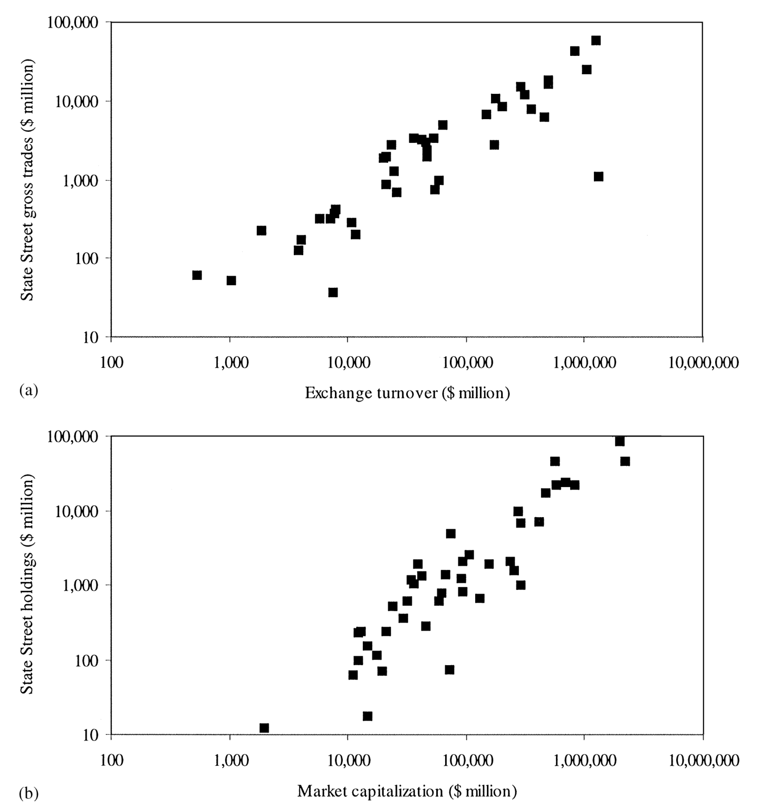
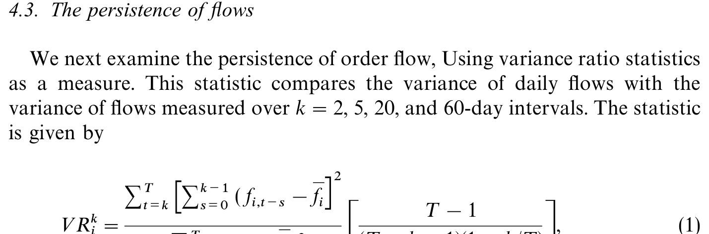
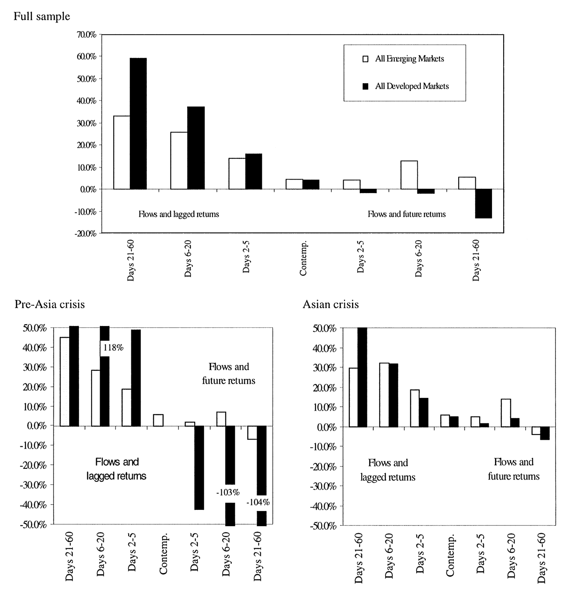
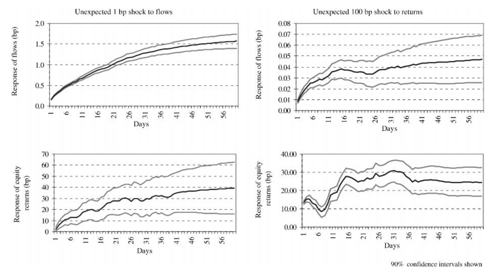
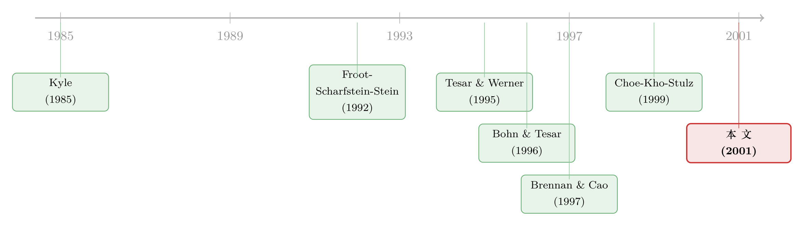

外资是「追涨」的，但真正可怕的是他们「赖着不走」
本文读的是 Froot, O'Connell & Seasholes (2001, Journal of Financial Economics)：他们拿到了一家全球最大托管银行的逐日跨境资金流，覆盖 44 个国家、近五年。最核心的一个发现是——外资的资金流「持续性」远高于收益率本身，而正是这一个性质，把「追涨杀跌」「资金预测收益」「亚洲危机里价格暴跌但外资其实没跑」这三件看似无关的事，串成了同一个故事。
1 一个老问题，和一份从没人见过的数据
外国投资者一进场，本地股市就涨；他们一撤，市场就崩。这套说法在每一次金融动荡里都会被重新搬出来：1994 年的墨西哥、1997 年的亚洲，舆论里总有一个版本，说「热钱」是过度反应、是传染、是把好端端的市场推下悬崖的那只手。与之针锋相对的，是金融经济学家更冷静的另一种说法——交易只是信息被消化进价格的过程，资金外流不制造危机，它只是反映了基本面已经坏掉的事实。
两种观点都各有拥趸，可问题在于：在 2001 年之前，几乎没有人真正看清过国际资金流到底长什么样。原因很朴素——数据太粗。当时能拿到的跨境资金流，最好的也只是月度，多数是季度，而且往往来自美国财政部的申报口径。Tesar and Werner (1994, 1995a,b)、Bohn and Tesar (1996)、Brennan and Cao (1997) 这一批论文，靠的就是这种低频数据。他们确实发现了「流入与收益正相关」，但季度数据有一个致命的软肋：你根本分不清这个相关到底是「同期」的，还是「资金领先收益」或「收益领先资金」——三件事在一个季度里被搅成了一团。
于是，一个自然的问题是：如果有人能把资金流的频率从「季度」一路压到「逐日」，会看到什么？
这正是 Froot、O'Connell 和 Seasholes 这篇论文的起点。他们拿到了 State Street Bank & Trust（下称 SSB）的专有数据。SSB 是美国最大的主托管银行、最大的共同基金托管行，托管着全世界约 $6 trillion 的资产，约占美国共同基金托管业务的 40%。托管行的好处是：它记录下客户的每一笔证券交易和结算。通过观察「以哪种货币结算」，作者把跨境交易识别了出来——比如，所有以泰铢结算、又不是泰国本地投资者发起的交易，就是流入泰国的外资。
2 这群「外资」到底是谁，数据干不干净
这里要先停下来想一个看似学究、其实生死攸关的问题：资金流数据天生是「暧昧」的。
任何一笔交易，从买方看是流入，从卖方看是流出。如果你随机抽一批「买单」，它和另一批随机抽的「卖单」按定义就不相关，也和收益不相关。所以——资金流之所以有研究价值，唯一的理由是它识别出了一群「和别人不一样」的投资者。在这篇论文里，这群人就是「注册在本地市场之外的大型机构投资者」：养老金、捐赠基金、共同基金、政府基金。作者把流入定义为：任何由非本地投资者发起、以本地货币结算的购买。
这套定义带来了一份极其难得的数据：44 个国家（16 个发达市场、28 个新兴市场），逐日，从 1994 年 8 月 1 日到 1998 年 12 月 31 日，累计涉及超过 $960 billion 的股票买卖。
但作者非常诚实地把数据的几处软肋摆在了台面上。其一，一只美国共同基金会被记成「投资者」，可如果它其实是一只泰国股票基金、资金来自泰国居民的申购，那这笔「外资流入泰国」就被错认了来源。其二，ADR 和各类股权衍生品以美元在美国结算，因而不计入流入——好在本地股与 ADR 之间通常有活跃套利，问题不在于「漏掉 ADR」，而在于「做套利的那个人不一定是 SSB 客户」。其三，数据按合约结算日记录，作者用各国结算惯例（见论文 Table 1，如 T+2、T+3、T+5）倒推回交易日。
那么，这群人有多「代表性」？SSB 毕竟只占全球证券的约 12%。作者拿日本和泰国的官方月度净股票流来对账：日本财务省口径下的总流入，与 SSB 数据的月度相关系数高达 0.75。对一个外资构成如此庞杂的国家来说，这个相关性高得惊人。论文的 Figure 2 进一步把 SSB 的交易量、托管市值，与全球各市场的换手率、市值放在一起比对，整体高度吻合。

Figure 2: Worldwide stock market turnover and capitalization compared to State Street trades and
3 第一块拼图：资金会「抱团」，而且越来越抱团
有了干净的高频数据，作者开始一块一块地拼图。
首先，他们看资金流在国家之间的相关性。结论是：同期的跨国资金流之间存在一个小但显著的正相关，而且这个相关在同一区域内部明显更大。换句话说，存在「区域资金因子」——拉美的钱一起进、一起出，东亚的钱也一起进、一起出。更值得注意的是，这种区域因子的重要性随时间在上升。Table 5 报告了各组的平均两两相关及其标准误，把这种「抱团」量化了出来。

Table 5: presents the average pairwise correlation and the associated standard error for each
接着，一个自然的问题是：抱团的资金，和股票收益的「抱团」是一回事吗？作者用 900 多对周度股票收益相关性画了一张热力图（Figure 4），可以直观地看到收益相关的区域结构——这为「资金的区域因子」找到了一个价格端的镜像。
4 真正的主角登场：持续性
现在，到了这篇论文真正的核心。
作者用资金流的持续性 (persistence) 来刻画它。这背后有扎实的理论动机：一大批市场微观结构模型预测，掌握私有信息的交易者会慢慢建仓，以压低交易成本——典型如 Kyle (1985)，他推导出单个交易者的交易成本是瞬时订单流的二次函数；Froot, Scharfstein and Stein (1992) 用大量非策略性、风险中性的交易者也得到了类似结论。除了信息，制度因素同样会带来持续性：一次资产配置的结构性调整，往往是分阶段执行的。
实证结果非常清楚：资金流是高度持续的，而且远比收益率本身持续——收益率几乎是不可预测的随机游走，资金流却像有惯性一样，今天进、明天还在进。作者还发现一个有意思的不对称：总流出比总流入更持续。
把这一点记牢：「资金流远比收益持续」是全文的题眼。下面所有看起来彼此独立的发现，最终都要回到这一句话上来。
5 把季度协方差拆成三块
低频数据最大的遗憾，是分不清「资金和收益的相关」到底发生在哪个时间方向上。逐日数据第一次让这件事变得可拆。
作者把「季度资金流」与「季度收益」的协方差，分解成三个部分：
$$\text{Cov}(f_q, r_q) = \underbrace{\text{Cov}(f, r_{\text{lag}})}_{\text{(a)}} + \underbrace{\text{Cov}(f, r_{\text{contemp}})}_{\text{(b)}} + \underbrace{\text{Cov}(f, r_{\text{future}})}_{\text{(c)}}$$
- (a) 资金流与过去收益的协方差；
- (b) 资金流与同期收益的协方差；
- (c) 资金流与未来收益的协方差。
结果分两路落地：
第一路，资金追着过去的收益跑。 净流入与滞后收益强相关，符号大体为正——这正是正向反馈交易 (positive feedback trading)，俗称「追涨」。作者给出了一个惊人的量级：在不控制当期与过去流入的前提下，把「追涨」定义为「今天收益上升导致未来资金流入增加」，它能解释净流入与收益之间季度协方差的 60%–85%。这一点和 Wermers (1999) 在美股里发现的机构羊群行为遥相呼应——他发现机构在过去极端正收益的股票里集中买入、在极端负收益的股票里集中卖出。
第二路，资金还能预测未来的收益。 净流入与未来的股票收益、汇率收益也相关，且在新兴市场统计显著。未来收益的可预测性，解释了季度协方差的 15%–35%。Figure 7 把这套季度协方差分解画了出来。

Figure 7: Quarterly covariance decomposition: #ows and equity returns. This "gure shows the
这第二路结果，有两种解释，而它们指向的世界完全不同：一种是国际投资者对新兴市场握有有价值的私有信息（所以他们的流入能预报涨）；另一种则更微妙——是价格压力 (price pressure) 叠加资金流的持续性，机械地制造出了可预测性。这个张力，正是下一节模型要回答的。
6 一个简单模型：为什么「短暂」的流入，反而预示着「下跌」
但真正关键的一步，在于把上面的关联翻译成一个因果结构。光靠数据只能验证「相关」，验证不了「因果」。于是作者搭了一个简单的模型。
模型的设定可以这样写。记某市场的（净）流入为 \(f_t\)、收益为 \(r_t\)。第一条方程说：流入由过去的流入和过去的收益驱动——
$$f_t = a\, f_{t-1} + b\, r_{t-1} + \varepsilon_t^{f}$$
这里 \(a>0\) 抓住了资金流的持续性（前一期进得多，这一期还会进），\(b>0\) 抓住了追涨（上一期涨得好，这一期钱跟进）。
第二条方程说：收益由当期和过去的流入驱动——
$$r_t = c_0\, f_t + c_1\, f_{t-1} + \varepsilon_t^{r}$$
这条方程是全文的钥匙，值得把它的每一块拆开看：
这个设定的精妙之处在于：它没有直接假设收益是自相关的，可收益的自相关却作为一个内生特征冒了出来。道理很直白——既然 \(r_t\) 依赖于 \(f_t\)，而 \(f_t\) 本身是高度自相关的（\(a>0\)），那么 \(r_t\) 自然就继承了自相关。指数收益里那个众所周知的正自相关，在这里不是硬塞进去的假设，而是「流动驱动价格 + 流动有惯性」的副产品。
现在来跑这个机器。给流入一个外生冲击，会发生什么？
一笔流入的冲击，会让市场预期「后面还有更多流入」（因为 \(a>0\)，资金有惯性）。当前价格于是不只反映这一笔流入，还提前反映了对未来流入的预期，价格因此涨得更多。可一旦这些预期中的未来流入没有兑现，价格就要跌回去。
请注意这句话里最反直觉的一点：整个下跌过程，根本不需要发生任何真实的净流出。 只要「短暂的（transitory）流入」没能延续成「持续的流入」，价格就会向下修正。这正好对应了论文摘要里的第六个发现——短暂的流入会负向地冲击未来收益。
7 用 VAR 把「追涨」逼到墙角
到这里，还剩一个识别上的隐患。「收益预测未来流入」这件事，可能根本不是真追涨——它也许只是因为收益和当期流入相关、而流入又持续，于是收益就「顺带」预测了未来流入。
为了把真追涨和这种假象分开，作者上了一个双变量向量自回归 (vector autoregression, VAR) 模型，问一个更严苛的问题：在控制住过去的流入之后，过去的收益还能不能额外地预测未来的流入？
答案是能。收益在过去流入之外，仍然对未来流入有预测力——所以「追涨」通过了这个更严的检验。反过来，过去的流入在加入滞后收益后，依然是预测未来流入的重要变量，只是滞后收益的统计显著性掉了不少。
而在「预测收益」这一侧：新兴市场的收益，在控制过去收益之后，仍然能被流入预测；发达市场方向一致，但统计上几乎不显著。作者给了一个克制的解释：发达市场流入里的噪声更大，使得滞后收益把流入里那点预测成分给「抢」走了。Figure 8 和 Figure 9 分别画出了新兴市场和发达市场的累积脉冲响应函数，把这套动态可视化了出来。下面这张是新兴市场的：

Figure 8: Impulse response functions: all emerging markets. Graphs of the cumulative impulse
正是这个「流入对价格的同期冲击强烈显著」「短暂流入预示未来下跌」的组合，让作者敢于把模型用回现实。
8 反转：亚洲危机里，外资其实没跑
最漂亮的落点，留给了亚洲危机。
舆论的默认剧本是：1997–1998 年新兴市场股价暴跌，一定是因为外资仓皇出逃。可数据给出的事实恰恰相反——国际投资者并没有抛弃新兴市场。在 1997 年 7 月到 1998 年 7 月间，他们对新兴市场股票始终是净买入，只是速度慢了下来：所有新兴市场的日均流入降到了危机前（1994–1997）水平的 40%，亚洲降到 30%。
净买入、却暴跌，这看上去像个悖论。但放回上一节的模型里，它严丝合缝：危机之前，正是「预期中的未来流入」把该区域的价格提前抬高了；当这些流入没能如约而至——哪怕只是从「快速流入」放缓到「慢速流入」——价格就要把那部分提前透支的涨幅吐回去。不需要真正的出逃，放缓本身就足以让价格下跌。
这就是那个「持续性」题眼最终兑现的地方：它不仅解释了追涨和可预测性，还把一场看似矛盾的危机翻译成了一句平静的话——市场早就替「会持续的流入」付过钱了。
9 文献脉络
把这条线索拉直来看，会更清楚这篇论文站在哪里。
最上游是市场微观结构的理论根基。Kyle (1985) 告诉我们，掌握私有信息的交易者为压低成本会慢慢建仓，订单流因此天然带有持续性；Froot, Scharfstein and Stein (1992) 用短视投机者的羊群行为，从另一个角度给出了同样的「资金抱团、慢慢推进」的图景。

接着是国际资金流的实证近亲：Tesar and Werner (1994, 1995a,b)、Bohn and Tesar (1996)、Brennan and Cao (1997) 用季度数据建立了「流入与美元股票收益正相关」的基本事实，Bohn and Tesar (1996) 还发现流入与滞后流入、与预期收益的度量正相关。但季度频率让它们对「非同期相关」几乎无话可说。Brennan and Cao (1997) 提出了一个信息解释：国际投资者先验更分散、存在累积的信息劣势，因而正面信息一来，持仓就向他们重新配置。Frankel and Schmukler (1996) 则用墨西哥封闭式基金给出了反向证据——危机时本地投资者反而更知情。
价格端的「资金推动价格」也有近亲：Clark and Berko (1996) 估计墨西哥意外流入 1% 市值会推高价格 13%；Warther (1995) 发现美国共同基金权益资产意外增加 1%，股价上升 5.7%。还有 Wermers (1999) 关于机构羊群与后续收益的证据。
而 Choe, Kho and Stulz (1999) 用 1997 年的韩国全市场交易，是当时极少数能与本文比肩的高频研究之一。（关于外资在韩国是否真有信息劣势，可参见《外资真有「信息劣势」吗？——首尔交易簿里那 37 个基点的真相》；关于美国投资者在国际股市里那份「全球情报」，可参见《你以为美国人在「追涨」外国股票，其实他们手里攥着一份全球情报》。）
本文的位置，就在这张图的交汇点：它第一次用逐日、跨 44 国的资金流，把「同期 / 领先 / 滞后」三个时间方向干净地拆开，并用一个简单模型把追涨、可预测性与危机统一进了「持续性」这一根主线。至于外资究竟是不是「蝗虫」，后来的研究又给出了更长期的答案（可参见《外资真是「蝗虫」吗？——一次跨 30 国的长期投资体检》）。
10 评论与延伸（Q&A + 研究方向）
（a）几个可能的疑问
Q：「资金流持续」和「追涨」不是一回事吗？为什么要费力气分开？
不是一回事，而且分清楚是全文的识别核心。「持续」说的是 \(f_t\) 对自己的滞后 \(f_{t-1}\) 有依赖；「追涨」说的是 \(f_t\) 对滞后收益 \(r_{t-1}\) 有依赖。在季度数据里二者纠缠不清，因为收益和当期流入相关、流入又持续，收益会「顺带」预测未来流入。作者用 VAR 在控制过去流入之后，发现过去收益对未来流入仍有额外预测力——这才把真追涨从假象里剥出来。
Q：「流入能预测未来收益」，到底是外资有私有信息，还是单纯的价格压力？
论文坦承数据本身分不清这两者。它倾向的解释偏向后者：价格压力叠加流动持续性，能机械地产生可预测性，而不必假设外资握有基本面私密信息。模型里那个「短暂流入预示下跌」的结果尤其支持价格压力一侧——如果是真信息，价格上涨应当是永久的、不该反转。
Q：净买入却暴跌，这难道不是自相矛盾吗？
不矛盾，恰恰是模型最强的预测。危机前，价格已经为「预期中的持续流入」提前买了单；当流入从快速放缓到慢速（仍是净流入），预期落空，价格就把透支的涨幅吐回去。下跌来自「预期未兑现」，而非「真实出逃」——这正是高频数据相对舆论叙事的颠覆之处。
Q：SSB 只占全球证券的 12%，凭什么代表「国际投资者」？
作者的辩护有两层。其一，代表性不是研究价值的前提——哪怕是「最聪明的十个」或「最笨的十个」跨境交易者，只要他们内部比与外部更同质、且交易随时间/跨国/与收益有有趣互动，就值得研究。其二，他们仍用日本（月度相关
0.75）和 Figure 2 的换手率/市值比对，说明数据在量级上确实贴合总体。
Q：用「结算货币」识别跨境流，会不会把本地人借道外资基金的钱也算进来？
会，这是论文明确承认的软肋之一：若一只美国注册基金其实是泰国股票基金、钱来自泰国居民申购，就会被错记成「外资流入泰国」。ADR 与股权衍生品则因在美元结算而被系统性漏掉。作者认为后者的真正问题不在「漏掉」，而在做本地-ADR 套利的对手方未必是 SSB 客户。
Q：发达市场为什么几乎没有显著的收益可预测性？
作者的解释是噪声。发达市场流入里的噪声更大，使得滞后收益把流入中那点本就微弱的预测成分「抢」走了，于是流入对发达市场收益的额外预测力被淹没。方向与新兴市场一致，只是统计上立不住。
（b）几个可能的研究问题与提案
-
把「持续性」搬到公司债的外资流入上。 【经济故事】这篇论文的题眼是「流动持续 → 价格提前透支 → 预期落空则下跌」。公司债市场的外资流入是否同样持续？如果是，那么信用利差在危机前是否也被「预期中的持续买入」压低、危机时因流入放缓而非真实抛售而走阔？这对理解 2020 年 3 月那类信用流动性恐慌很有意思。 【可行性】中。需要逐日/逐周的外资公司债持仓或交易流（如 TRACE 配合托管或基金层面持仓），识别上可借鉴本文的 VAR 框架，把利差变动拆成同期/领先/滞后三块。难点在于公司债成交稀疏，高频度量噪声大。
-
「短暂 vs 持续」流入的事前可分性。 【经济故事】本文事后用 VAR 区分短暂与持续流入。一个更有野心的问题是：能否事前用流入的可观测特征（来源国、机构类型、是否被动指数驱动）预测它会不会延续？若能，则可直接检验「被预判为短暂的流入，其价格冲击更易反转」。 【可行性】中高。需要带投资者类型标签的流量数据（如本文这类托管数据，或 EPFR 的基金类型拆分）。识别靠对流入做异质性分组后的脉冲响应对比，doable，但拿到带标签的专有数据是主要门槛。
-
区域资金因子的「上升」是否被被动化驱动。 【经济故事】本文发现区域资金因子的重要性随时间上升（样本止于 1998）。一个自然延伸：2000 年后 ETF 与新兴市场指数化的爆发，是否进一步抬高了这种「抱团」？若是，则危机时的同步抛压机制会被放大。 【可行性】高。区域/国家层面的资金流（IIF、EPFR）与被动份额数据都可得，可用指数纳入事件（如 MSCI 调整）做准自然实验，识别相对清晰。
-
流出比流入更持续：这个不对称还在吗？ 【经济故事】本文一个被低估的发现是「总流出比总流入更持续」。这与「下跌时流动性更易蒸发」的直觉一致。若这个不对称稳健，它对资本流动突停 (sudden stop) 与外汇干预的择时都有政策含义。 【可行性】高。重复本文的持续性度量到更长、更新的样本即可，数据与方法都现成，是一个低成本、高信息量的复制+扩展。
11 我的判断
这篇论文的贡献，与其说是某一个系数，不如说是一种视角：它第一次让我们在足够高的频率上，把「资金和收益的关系」按时间方向拆开，并且用一个朴素到几乎不像模型的双变量系统，把追涨、收益可预测性、以及亚洲危机的悖论，全收进了「持续性」这一条主线。尤其是「净买入却暴跌、下跌无需真实出逃」这个推论，是把高频事实和经济机制咬合得最漂亮的一处。
但识别上的担忧是真实的，而且作者比谁都清楚。最根本的一条，是私有信息与价格压力在数据里无法被干净分开——「流入预测收益」既可以是外资先知先觉，也可以是持续流动的纯机械结果。论文倾向后者，但这是一个解释上的选择，而非被识别出来的因果。其次，结算货币口径会同时混入「本地人借道外资基金」的资金、并系统性漏掉 ADR 与衍生品，这对量级估计的偏误方向并不一目了然。再者，样本只有四年多、且横跨一场大危机，对「持续性」这种需要长期才能精确估计的统计量来说，是一种内在的局限——作者自己也提醒，失败结算引发的额外交易，可能让流动持续性被轻微高估。
我最想看到的后续，是把这套「持续性—预期透支—反转」的逻辑，搬到一个能事前给流入贴标签的环境里去：如果我们能在资金进场的当下，就用机构类型、来源、被动与否区分出它「会不会延续」，那么本文事后才能讲的故事，就有机会变成一个事前可证伪的预测。对今天关心外资持有人与新兴市场（乃至公司债）流动性的人来说，这或许才是这篇二十多年前的论文留下的、最值得接着做下去的那根线头。
参考文献
Bohn, H., Tesar, L. (1996). U.S. equity investment in foreign markets: portfolio rebalancing or return chasing? American Economic Review 86, 77–81.
Brennan, M., Cao, H. (1997). International portfolio investment flows. Journal of Finance 52, 1851–1880.
Choe, H., Kho, B., Stulz, R. (1999). Do foreign investors destabilize stock markets? The Korean experience in 1997. Journal of Financial Economics 54, 227–264.
Clark, J., Berko, E. (1996). Foreign investment fluctuations and emerging market stock returns: the case of Mexico. Federal Reserve Bank of New York.
Frankel, J., Schmukler, S. (1996). Country fund discounts, asymmetric information and the Mexican crisis of 1994: did local residents turn pessimistic before international investors? NBER Working Paper No. 5714.
Froot, K., O'Connell, P., Seasholes, M. (2001). The portfolio flows of international investors. Journal of Financial Economics 59(2), 151–193.
Froot, K., Scharfstein, D., Stein, J. (1992). Herd on the street: informational inefficiencies in a market with short-term speculation. Journal of Finance 47, 1461–1484.
Kyle, A. (1985). Continuous auctions and insider trading. Econometrica 53, 1315–1336.
Tesar, L., Werner, I. (1995). Home bias and high turnover. Journal of International Money and Finance 14, 467–492.
Warther, V. (1995). Aggregate mutual fund flows and security returns. Journal of Financial Economics 39, 209–236.
Wermers, R. (1999). Mutual fund herding and the impact on stock prices. Journal of Finance 54, 581–622.